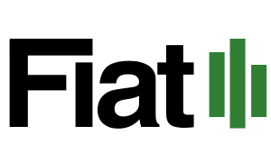

<!DOCTYPE html>
<!-- FIAT v3.0 - Sistema Predictivo Legislativo -->
<html lang="es">
<head>
    <meta charset="UTF-8" />
    <meta name="viewport" content="width=device-width, initial-scale=1.0" />
    <title>FIAT - Sistema Predictivo Legislativo</title>
    <script src="https://cdn.tailwindcss.com"></script>
    <script src="https://unpkg.com/react@18/umd/react.production.min.js"></script>
    <script src="https://unpkg.com/react-dom@18/umd/react-dom.production.min.js"></script>
    <script src="https://unpkg.com/@babel/standalone/babel.min.js"></script>
    <script src="https://cdn.jsdelivr.net/npm/chart.js@4"></script>
    <script>
        tailwind.config = {
            theme: {
                extend: {
                    colors: {
                        semaforo: { verde: '#2e7d32', amarillo: '#c6972b', rojo: '#c62828' },
                        fondo: '#ffffff',
                        tarjeta: '#ffffff',
                        borde: '#d1d5db',
                        acento: '#1a365d',
                    }
                }
            }
        }
    </script>
    <style>
        body { background: #ffffff; }
        .glass { background: #ffffff; border: 1px solid #e5e7eb; box-shadow: 0 1px 2px rgba(0,0,0,0.04); }
        .glass:hover { box-shadow: 0 2px 8px rgba(0,0,0,0.06); }
        .score-ring { transition: stroke-dashoffset 1s ease-in-out; }
        @keyframes pulse-verde { 0%,100% { box-shadow: 0 1px 3px rgba(0,0,0,0.06); } 50% { box-shadow: 0 0 0 3px rgba(46,125,50,0.15); } }
        @keyframes pulse-amarillo { 0%,100% { box-shadow: 0 1px 3px rgba(0,0,0,0.06); } 50% { box-shadow: 0 0 0 3px rgba(198,151,43,0.15); } }
        .pulse-verde { animation: pulse-verde 2.5s infinite; }
        .pulse-amarillo { animation: pulse-amarillo 2.5s infinite; }
        .fuentes-panel::-webkit-scrollbar { width: 4px; }
        .fuentes-panel::-webkit-scrollbar-track { background: transparent; }
        .fuentes-panel::-webkit-scrollbar-thumb { background: #cbd5e1; border-radius: 4px; }
        .tab-active { border-bottom: 2px solid #1a365d; color: #1a365d; font-weight: 600; }
        .tab-inactive { border-bottom: 2px solid transparent; color: #6b7280; }
        .tab-inactive:hover { color: #374151; }
        .nav-tab { padding: 8px 16px; font-size: 13px; font-weight: 500; letter-spacing: 0.05em; text-transform: uppercase; border-bottom: 3px solid transparent; transition: all 0.2s; cursor: pointer; color: #6b7280; }
        .nav-tab:hover { color: #1a365d; }
        .nav-tab-active { color: #1a365d; border-bottom-color: #1a365d; font-weight: 700; }
        .estado-hover { transition: all 0.15s; cursor: pointer; }
        .estado-hover:hover { filter: brightness(0.85); }
    </style>
</head>
<body class="min-h-screen text-gray-800">
    <div id="root"></div>

    <script type="text/babel">
        const { useState, useEffect, useRef } = React;

        /* ================================================================
           HELPERS
           ================================================================ */

        /**
         * Formatea un timestamp ISO del servidor a tiempo relativo del usuario.
         * Muestra "Hace X min/horas" si es reciente, o "Hoy, HH:MM" / "Ayer, HH:MM" / fecha completa.
         */
        function formatearActualizacion(isoString) {
            if (!isoString) return '';
            const fechaServer = new Date(isoString);
            if (isNaN(fechaServer.getTime())) return '';
            const ahora = new Date();
            const diffMs = ahora - fechaServer;
            const diffMin = Math.floor(diffMs / 60000);
            const diffHoras = Math.floor(diffMs / 3600000);

            const horaLocal = fechaServer.toLocaleTimeString('es-MX', { hour: '2-digit', minute: '2-digit', hour12: true });
            const hoy = new Date(ahora.getFullYear(), ahora.getMonth(), ahora.getDate());
            const ayer = new Date(hoy.getTime() - 86400000);
            const fechaDia = new Date(fechaServer.getFullYear(), fechaServer.getMonth(), fechaServer.getDate());

            if (diffMin < 1) return 'Justo ahora';
            if (diffMin < 60) return `Hace ${diffMin} min`;
            if (diffHoras < 6) return `Hace ${diffHoras}h (${horaLocal})`;
            if (fechaDia.getTime() === hoy.getTime()) return `Hoy, ${horaLocal}`;
            if (fechaDia.getTime() === ayer.getTime()) return `Ayer, ${horaLocal}`;
            return fechaServer.toLocaleDateString('es-MX', { day: 'numeric', month: 'short', year: 'numeric' }) + ', ' + horaLocal;
        }

        /* ================================================================
           SHARED COMPONENTS
           ================================================================ */

        function ScoreRing({ score, color, size = 80 }) {
            const radius = (size - 8) / 2;
            const circumference = 2 * Math.PI * radius;
            const offset = circumference - (score / 100) * circumference;
            const colors = { verde: '#2e7d32', amarillo: '#c6972b', rojo: '#c62828' };
            const strokeColor = colors[color] || '#9ca3af';
            return (
                <svg width={size} height={size} className="transform -rotate-90">
                    <circle cx={size/2} cy={size/2} r={radius} stroke="#e5e7eb" strokeWidth="6" fill="none" />
                    <circle cx={size/2} cy={size/2} r={radius} stroke={strokeColor} strokeWidth="6" fill="none"
                        strokeDasharray={circumference} strokeDashoffset={offset}
                        strokeLinecap="round" className="score-ring" />
                    <text x={size/2} y={size/2} textAnchor="middle" dominantBaseline="central"
                        className="transform rotate-90" style={{transformOrigin:'center', fontSize: size > 60 ? '16px' : '12px'}}
                        fill="#1a365d" fontWeight="bold">
                        {score.toFixed(0)}%
                    </text>
                </svg>
            );
        }

        const PARTIDO_COLORS = {
            'MORENA': '#8B1A2B', 'PAN': '#003B7A', 'PRI': '#C4161C',
            'PVEM': '#00813E', 'PT': '#CC0000', 'MC': '#FF6600', 'PRD': '#FFD700',
        };

        function SemaforoCard({ data, onClick }) {
            const colorClasses = {
                verde: 'border-semaforo-verde/40 hover:border-semaforo-verde',
                amarillo: 'border-semaforo-amarillo/40 hover:border-semaforo-amarillo',
                rojo: 'border-semaforo-rojo/40 hover:border-semaforo-rojo',
            };
            const pulseClass = data.color === 'verde' ? 'pulse-verde' : data.color === 'amarillo' ? 'pulse-amarillo' : '';
            const colorDot = { verde: 'bg-semaforo-verde', amarillo: 'bg-semaforo-amarillo', rojo: 'bg-semaforo-rojo' };
            return (
                <div onClick={() => onClick(data)}
                    className={`glass border ${colorClasses[data.color]} rounded-xl p-4 cursor-pointer transition-all duration-300 hover:scale-[1.02] ${pulseClass}`}>
                    <div className="flex items-center justify-between mb-3">
                        <div className="flex items-center gap-2">
                            <div className={`w-3 h-3 rounded-full ${colorDot[data.color]}`}></div>
                            <h3 className="font-semibold text-sm text-gray-800">{data.nombre}</h3>
                        </div>
                        <ScoreRing score={data.score_total} color={data.color} size={56} />
                    </div>
                    <div className="grid grid-cols-5 gap-1 text-xs text-gray-500">
                        <div className="text-center"><div className="text-gray-700 font-medium">{data.score_media.toFixed(0)}%</div><div>Media</div></div>
                        <div className="text-center"><div className="text-gray-700 font-medium">{data.score_trends.toFixed(0)}%</div><div>Trends</div></div>
                        <div className="text-center"><div className="text-gray-700 font-medium">{data.score_congreso.toFixed(0)}%</div><div>Congreso</div></div>
                        <div className="text-center"><div className="text-rose-600 font-medium">{(data.score_mananera || 0).toFixed(0)}%</div><div>CSP</div></div>
                        <div className="text-center"><div className="text-gray-700 font-medium">{data.score_urgencia.toFixed(0)}%</div><div>Urgencia</div></div>
                    </div>
                </div>
            );
        }

        function FuentesMedia({ articulos }) {
            if (!articulos || articulos.length === 0) return <div className="text-gray-400 text-sm py-3 text-center">Sin articulos de medios en esta categoria</div>;
            return (
                <div className="space-y-2 fuentes-panel max-h-56 overflow-y-auto pr-1">
                    {articulos.map((a, i) => (
                        <div key={i} className="bg-gray-50 rounded-lg p-2.5 border border-gray-100">
                            <a href={a.url} target="_blank" rel="noopener noreferrer" className="text-sm text-blue-700 hover:text-blue-900 hover:underline leading-tight block">{a.titulo}</a>
                            <div className="flex items-center gap-2 mt-1 text-xs text-gray-400">
                                <span className="bg-gray-100 px-1.5 py-0.5 rounded text-gray-600">{a.fuente}</span>
                                <span>{a.fecha}</span>
                            </div>
                        </div>
                    ))}
                </div>
            );
        }

        function FuentesGaceta({ documentos }) {
            if (!documentos || documentos.length === 0) return <div className="text-gray-400 text-sm py-3 text-center">Sin documentos de Gaceta</div>;
            const tipoColor = { iniciativa: 'bg-blue-50 text-blue-800 border border-blue-200', dictamen: 'bg-amber-50 text-amber-800 border border-amber-200', punto_de_acuerdo: 'bg-purple-50 text-purple-800 border border-purple-200', minuta: 'bg-green-50 text-green-800 border border-green-200' };
            return (
                <div className="space-y-2 fuentes-panel max-h-56 overflow-y-auto pr-1">
                    {documentos.map((d, i) => (
                        <div key={i} className="bg-gray-50 rounded-lg p-2.5 border border-gray-100">
                            <div className="flex items-start gap-2">
                                {d.numero_doc && <span className="flex-shrink-0 bg-acento text-white text-xs font-bold px-2 py-0.5 rounded mt-0.5">#{d.numero_doc}</span>}
                                <a href={d.url_pdf || d.url} target="_blank" rel="noopener noreferrer" className="text-sm text-blue-700 hover:text-blue-900 hover:underline leading-tight">{d.titulo.replace(/\n\t/g, ' ').slice(0, 150)}</a>
                            </div>
                            <div className="flex items-center gap-2 mt-1.5 text-xs text-gray-400 flex-wrap">
                                <span className={`px-1.5 py-0.5 rounded text-xs ${tipoColor[d.tipo] || 'bg-gray-100 text-gray-600'}`}>{d.tipo}</span>
                                {d.autor && d.autor !== 'No identificado' && <span className="text-gray-500">{d.autor}</span>}
                                <span>{d.fecha}</span>
                            </div>
                        </div>
                    ))}
                </div>
            );
        }

        function FuentesTrends({ trends }) {
            if (!trends || trends.length === 0) return <div className="text-gray-400 text-sm py-3 text-center">Sin datos de Google Trends</div>;
            const maxVal = Math.max(...trends.map(t => t.interes_promedio || 0), 1);
            return (
                <div className="space-y-2 fuentes-panel max-h-56 overflow-y-auto pr-1">
                    {trends.map((t, i) => (
                        <div key={i} className="flex items-center gap-3">
                            <span className="text-sm text-gray-700 w-28 truncate" title={t.keyword}>{t.keyword}</span>
                            <div className="flex-1 bg-gray-200 rounded-full h-3 overflow-hidden">
                                <div className="h-full rounded-full bg-acento/70 transition-all" style={{width: `${Math.max((t.interes_promedio / maxVal) * 100, 2)}%`}} />
                            </div>
                            <span className="text-xs text-gray-500 w-10 text-right">{(t.interes_promedio || 0).toFixed(0)}</span>
                        </div>
                    ))}
                </div>
            );
        }

        function FuentesMananera({ menciones }) {
            if (!menciones || menciones.length === 0) return <div className="text-gray-400 text-sm py-3 text-center">Sin menciones de la Presidenta en este tema</div>;
            return (
                <div className="space-y-2 fuentes-panel max-h-56 overflow-y-auto pr-1">
                    {menciones.map((m, i) => (
                        <div key={i} className="bg-rose-50 rounded-lg p-3 border border-rose-200">
                            <div className="flex items-center gap-2 mb-1.5">
                                <span className="bg-rose-600 text-white text-[10px] font-semibold px-1.5 py-0.5 rounded">Conferencia CSP</span>
                                <span className="text-xs text-gray-400">{m.fecha}</span>
                            </div>
                            <div className="text-sm text-gray-700 leading-relaxed italic">&laquo;{m.fragmento}&raquo;</div>
                            <a href={m.url} target="_blank" rel="noopener noreferrer" className="text-xs text-rose-600 hover:text-rose-800 hover:underline mt-1.5 inline-block">Ver conferencia completa &rarr;</a>
                        </div>
                    ))}
                </div>
            );
        }

        function AlertaItem({ alerta, categorias }) {
            const fecha = new Date(alerta.fecha).toLocaleString('es-MX', { day: '2-digit', month: 'short', hour: '2-digit', minute: '2-digit' });
            const catData = categorias.find(c => c.categoria === alerta.categoria);
            const catNombre = catData ? catData.nombre : alerta.categoria;
            const colorLabel = { verde: 'Alta actividad prevista', amarillo: 'Actividad moderada', rojo: 'Baja actividad' };
            return (
                <div className="flex items-start gap-3 py-2 border-b border-gray-100 last:border-0">
                    <div className={`w-2 h-2 rounded-full mt-1.5 flex-shrink-0 ${alerta.color === 'verde' ? 'bg-semaforo-verde' : alerta.color === 'amarillo' ? 'bg-semaforo-amarillo' : 'bg-semaforo-rojo'}`}></div>
                    <div className="flex-1 min-w-0">
                        <div className="text-sm text-gray-800 font-medium">{catNombre}</div>
                        <div className="text-xs text-gray-500">{colorLabel[alerta.color] || 'Sin datos'}</div>
                        <div className="text-xs text-gray-400 mt-0.5">{fecha}</div>
                    </div>
                    <div className={`text-xs px-2 py-0.5 rounded-full font-medium ${alerta.color === 'verde' ? 'bg-green-50 text-green-800 border border-green-200' : alerta.color === 'amarillo' ? 'bg-yellow-50 text-yellow-800 border border-yellow-200' : 'bg-red-50 text-red-800 border border-red-200'}`}>{alerta.color}</div>
                </div>
            );
        }

        /* ================================================================
           HISTORICAL SCORES CHART (Polymarket-style)
           ================================================================ */

        const CATEGORY_COLORS = [
            '#2563eb', '#dc2626', '#059669', '#d97706', '#7c3aed',
            '#db2777', '#0891b2', '#65a30d', '#ea580c', '#4f46e5',
            '#0d9488', '#b91c1c', '#1d4ed8', '#9333ea',
        ];

        function HistorialScoresChart({ historial, semaforo, onCategoryClick }) {
            const chartRef = useRef(null);
            const chartInstance = useRef(null);
            const [hoveredCat, setHoveredCat] = useState(null);
            const [visibleCats, setVisibleCats] = useState(() => {
                /* Start with top 5 by current score */
                const sorted = [...semaforo].sort((a,b) => b.score_total - a.score_total);
                return new Set(sorted.slice(0, 5).map(s => s.categoria));
            });

            const { fechas, categorias } = historial;
            const catKeys = Object.keys(categorias);

            const toggleCat = (cat) => {
                setVisibleCats(prev => {
                    const next = new Set(prev);
                    if (next.has(cat)) { if (next.size > 1) next.delete(cat); }
                    else { next.add(cat); }
                    return next;
                });
            };

            const toggleAll = () => {
                if (visibleCats.size === catKeys.length) {
                    const sorted = [...semaforo].sort((a,b) => b.score_total - a.score_total);
                    setVisibleCats(new Set(sorted.slice(0, 5).map(s => s.categoria)));
                } else {
                    setVisibleCats(new Set(catKeys));
                }
            };

            useEffect(() => {
                if (!chartRef.current || fechas.length < 2) return;
                if (chartInstance.current) chartInstance.current.destroy();

                const labels = fechas.map(f => {
                    const d = new Date(f + 'T12:00:00');
                    return d.toLocaleDateString('es-MX', { day: '2-digit', month: 'short' });
                });

                const datasets = catKeys.filter(cat => visibleCats.has(cat)).map((cat, idx) => {
                    const catData = categorias[cat];
                    const colorIdx = catKeys.indexOf(cat);
                    const color = CATEGORY_COLORS[colorIdx % CATEGORY_COLORS.length];
                    const isHovered = hoveredCat === cat;
                    const hasHover = hoveredCat !== null;

                    return {
                        label: catData.nombre,
                        data: catData.scores.map(s => s === null ? undefined : s),
                        borderColor: hasHover && !isHovered ? color + '30' : color,
                        backgroundColor: color + '08',
                        borderWidth: isHovered ? 3 : (hasHover ? 1 : 1.5),
                        fill: false,
                        tension: 0.3,
                        pointRadius: isHovered ? 4 : 0,
                        pointHitRadius: 8,
                        pointHoverRadius: 5,
                        pointBackgroundColor: color,
                        pointBorderColor: '#fff',
                        pointBorderWidth: 2,
                        spanGaps: true,
                        order: isHovered ? 0 : 1,
                        _catKey: cat,
                    };
                });

                const thresholdPlugin = {
                    id: 'thresholds',
                    beforeDraw(chart) {
                        const { ctx, chartArea, scales } = chart;
                        if (!chartArea) return;
                        const yScale = scales.y;

                        /* Verde zone */
                        const y70 = yScale.getPixelForValue(70);
                        const yTop = chartArea.top;
                        ctx.fillStyle = 'rgba(46,125,50,0.04)';
                        ctx.fillRect(chartArea.left, yTop, chartArea.width, y70 - yTop);

                        /* Amarillo zone */
                        const y40 = yScale.getPixelForValue(40);
                        ctx.fillStyle = 'rgba(198,151,43,0.04)';
                        ctx.fillRect(chartArea.left, y70, chartArea.width, y40 - y70);

                        /* Rojo zone */
                        ctx.fillStyle = 'rgba(198,40,40,0.04)';
                        ctx.fillRect(chartArea.left, y40, chartArea.width, chartArea.bottom - y40);

                        /* Threshold lines */
                        ctx.setLineDash([4, 4]);
                        ctx.lineWidth = 1;

                        ctx.beginPath();
                        ctx.strokeStyle = 'rgba(46,125,50,0.3)';
                        ctx.moveTo(chartArea.left, y70);
                        ctx.lineTo(chartArea.right, y70);
                        ctx.stroke();

                        ctx.beginPath();
                        ctx.strokeStyle = 'rgba(198,40,40,0.3)';
                        ctx.moveTo(chartArea.left, y40);
                        ctx.lineTo(chartArea.right, y40);
                        ctx.stroke();

                        ctx.setLineDash([]);
                    }
                };

                chartInstance.current = new Chart(chartRef.current, {
                    type: 'line',
                    plugins: [thresholdPlugin],
                    data: { labels, datasets },
                    options: {
                        responsive: true,
                        maintainAspectRatio: false,
                        interaction: { mode: 'index', intersect: false },
                        plugins: {
                            legend: { display: false },
                            tooltip: {
                                backgroundColor: 'rgba(255,255,255,0.97)',
                                titleColor: '#111827',
                                bodyColor: '#374151',
                                borderColor: '#e5e7eb',
                                borderWidth: 1,
                                padding: 12,
                                displayColors: true,
                                boxWidth: 10,
                                boxHeight: 10,
                                titleFont: { size: 12, weight: 'bold' },
                                bodyFont: { size: 11 },
                                callbacks: {
                                    label: (item) => ` ${item.dataset.label}: ${item.raw?.toFixed(1)}%`
                                },
                                itemSort: (a, b) => (b.raw || 0) - (a.raw || 0),
                            }
                        },
                        scales: {
                            y: {
                                min: 0, max: 100,
                                position: 'right',
                                ticks: {
                                    color: '#9ca3af',
                                    font: { size: 10 },
                                    stepSize: 20,
                                    padding: 8,
                                    callback: v => v + '%',
                                },
                                grid: { color: '#f3f4f6', drawBorder: false },
                                border: { display: false },
                            },
                            x: {
                                ticks: {
                                    color: '#9ca3af',
                                    font: { size: 9 },
                                    maxRotation: 0,
                                    maxTicksLimit: 10,
                                    padding: 4,
                                },
                                grid: { display: false },
                                border: { display: false },
                            }
                        },
                    }
                });

                return () => { if (chartInstance.current) chartInstance.current.destroy(); };
            }, [historial, visibleCats, hoveredCat]);

            return (
                <div className="glass border border-borde rounded-xl p-4 space-y-3">
                    <div className="flex items-center justify-between">
                        <div>
                            <div className="text-xs font-semibold uppercase tracking-widest text-gray-400">Tendencia de scores</div>
                            <div className="text-[10px] text-gray-400 mt-0.5">Evolucion del score compuesto por categoria</div>
                        </div>
                        <button onClick={toggleAll}
                            className="text-[10px] text-acento hover:text-acento/80 font-medium px-2 py-1 rounded border border-acento/20 hover:bg-acento/5 transition-colors">
                            {visibleCats.size === catKeys.length ? 'Top 5' : 'Ver todas'}
                        </button>
                    </div>
                    <div style={{height: '220px'}}><canvas ref={chartRef}></canvas></div>
                    <div className="flex flex-wrap gap-1.5">
                        {catKeys.map((cat, idx) => {
                            const catInfo = categorias[cat];
                            const color = CATEGORY_COLORS[idx % CATEGORY_COLORS.length];
                            const isVisible = visibleCats.has(cat);
                            const lastScore = catInfo.scores.filter(s => s !== null).pop();
                            const catData = semaforo.find(s => s.categoria === cat);
                            return (
                                <button key={cat}
                                    onClick={() => toggleCat(cat)}
                                    onMouseEnter={() => setHoveredCat(cat)}
                                    onMouseLeave={() => setHoveredCat(null)}
                                    className={`flex items-center gap-1 px-2 py-1 rounded-lg text-[10px] font-medium transition-all border ${isVisible ? 'border-gray-300 bg-white shadow-sm' : 'border-transparent bg-gray-100 text-gray-400'}`}>
                                    <div className="w-2 h-2 rounded-full flex-shrink-0" style={{backgroundColor: isVisible ? color : '#d1d5db'}}></div>
                                    <span className={isVisible ? 'text-gray-700' : ''}>{catInfo.nombre.length > 15 ? catInfo.nombre.substring(0, 13) + '..' : catInfo.nombre}</span>
                                    {lastScore !== undefined && isVisible && <span className="text-gray-400 ml-0.5">{lastScore.toFixed(0)}%</span>}
                                </button>
                            );
                        })}
                    </div>
                </div>
            );
        }

        /* ================================================================
           DETAIL MODAL
           ================================================================ */

        function DetalleModal({ data, prediccion, fuentes, seriesTemporales, autoria, generado, onClose }) {
            if (!data) return null;
            const colors = { verde: '#2e7d32', amarillo: '#c6972b', rojo: '#c62828' };
            const chartRef = useRef(null);
            const chartInstance = useRef(null);
            const [tabActiva, setTabActiva] = useState('media');
            const catFuentes = fuentes?.[data.categoria] || {};
            const serie = seriesTemporales?.[data.categoria] || [];

            useEffect(() => {
                if (chartRef.current) {
                    if (chartInstance.current) chartInstance.current.destroy();
                    const serieConDatos = serie.filter(s => s.count > 0);
                    const primerFecha = serieConDatos.length > 0 ? serieConDatos[0].fecha : null;
                    const serieFiltrada = primerFecha ? serie.filter(s => s.fecha >= primerFecha) : serie.slice(-30);
                    const labels = serieFiltrada.map(s => { const d = new Date(s.fecha + 'T12:00:00'); return d.toLocaleDateString('es-MX', { day: '2-digit', month: 'short' }); });
                    const valores = serieFiltrada.map(s => s.count);
                    const ma7 = valores.map((_, i) => { const start = Math.max(0, i - 6); const slice = valores.slice(start, i + 1); return slice.reduce((a, b) => a + b, 0) / slice.length; });
                    const lineColor = colors[data.color];
                    const crosshairPlugin = { id: 'crosshair', afterDraw(chart) { if (chart.tooltip?._active?.length) { const x = chart.tooltip._active[0].element.x; const yAxis = chart.scales.y; const ctx = chart.ctx; ctx.save(); ctx.beginPath(); ctx.moveTo(x, yAxis.top); ctx.lineTo(x, yAxis.bottom); ctx.lineWidth = 1; ctx.strokeStyle = 'rgba(0,0,0,0.1)'; ctx.setLineDash([4, 4]); ctx.stroke(); ctx.restore(); } } };
                    chartInstance.current = new Chart(chartRef.current, {
                        type: 'line', plugins: [crosshairPlugin],
                        data: { labels, datasets: [
                            { label: 'Actividad diaria', data: valores, borderColor: lineColor, backgroundColor: lineColor + '08', borderWidth: 1.5, fill: { target: 'origin', above: lineColor + '10' }, tension: 0, pointRadius: 0, pointHitRadius: 8, pointHoverRadius: 4, pointHoverBackgroundColor: lineColor, pointHoverBorderColor: '#fff', pointHoverBorderWidth: 2 },
                            { label: 'Media movil 7d', data: ma7, borderColor: lineColor + '80', borderWidth: 1, borderDash: [6, 3], fill: false, tension: 0.4, pointRadius: 0, pointHitRadius: 0 }
                        ]},
                        options: { responsive: true, maintainAspectRatio: false, interaction: { mode: 'index', intersect: false },
                            plugins: { legend: { display: true, position: 'top', align: 'end', labels: { boxWidth: 12, boxHeight: 2, padding: 8, font: { size: 10 }, color: '#9ca3af' } }, tooltip: { backgroundColor: 'rgba(255,255,255,0.95)', titleColor: '#111827', bodyColor: '#374151', borderColor: '#e5e7eb', borderWidth: 1, padding: 10, displayColors: true, boxWidth: 8, boxHeight: 8, titleFont: { size: 11, weight: 'bold' }, bodyFont: { size: 11 }, callbacks: { title: (items) => items[0]?.label || '', label: (item) => item.datasetIndex === 0 ? ` ${item.raw} instrumentos` : ` MA(7): ${item.raw.toFixed(1)}` } } },
                            scales: { y: { position: 'right', beginAtZero: true, ticks: { color: '#9ca3af', font: { size: 10 }, stepSize: 1, padding: 8 }, grid: { color: '#f3f4f6', drawBorder: false }, border: { display: false } }, x: { ticks: { color: '#9ca3af', font: { size: 9 }, maxRotation: 0, maxTicksLimit: 8, padding: 4 }, grid: { display: false }, border: { display: false } } }
                        }
                    });
                }
                return () => { if (chartInstance.current) chartInstance.current.destroy(); };
            }, [data, serie]);

            const nMedia = catFuentes.articulos_medios?.length || 0;
            const nGaceta = catFuentes.documentos_gaceta?.length || 0;
            const nTrends = catFuentes.google_trends?.length || 0;
            const nCSP = catFuentes.menciones_csp?.length || 0;

            return (
                <div className="fixed inset-0 bg-black/40 backdrop-blur-sm flex items-center justify-center z-50 p-4" onClick={onClose}>
                    <div className="bg-white border border-gray-200 rounded-2xl max-w-2xl w-full max-h-[90vh] overflow-y-auto p-6 space-y-4 shadow-xl" onClick={e => e.stopPropagation()}>
                        <div className="flex items-center justify-between">
                            <h2 className="text-xl font-bold text-gray-900">{data.nombre}</h2>
                            <button onClick={onClose} className="text-gray-400 hover:text-gray-700 text-2xl">&times;</button>
                        </div>
                        <div className="flex items-center gap-4">
                            <ScoreRing score={data.score_total} color={data.color} size={90} />
                            <div>
                                <div className="text-3xl font-bold" style={{color: colors[data.color]}}>{data.score_total.toFixed(1)}</div>
                                <div className="text-gray-500 text-sm uppercase tracking-wider">{data.color}</div>
                                <div className="text-xs text-gray-400 mt-1">Actualizado: {formatearActualizacion(generado)}</div>
                            </div>
                        </div>
                        <div className="bg-gray-50/50 border border-gray-100 rounded-lg p-3">
                            <div className="text-[10px] text-gray-400 mb-2 uppercase tracking-wider font-medium">Actividad legislativa - SIL</div>
                            <div style={{height: '180px'}}><canvas ref={chartRef}></canvas></div>
                        </div>
                        <div className="grid grid-cols-5 gap-2 text-xs">
                            <div className="bg-acento/5 border border-acento/10 rounded-lg p-2 text-center"><div className="font-bold text-acento">{data.score_media.toFixed(0)}%</div><div className="text-gray-500">Media</div></div>
                            <div className="bg-gray-50 border border-gray-200 rounded-lg p-2 text-center"><div className="font-bold text-gray-700">{data.score_trends.toFixed(0)}%</div><div className="text-gray-500">Trends</div></div>
                            <div className="bg-amber-50 border border-amber-200 rounded-lg p-2 text-center"><div className="font-bold text-amber-800">{data.score_congreso.toFixed(0)}%</div><div className="text-gray-500">Congreso</div></div>
                            <div className="bg-rose-50 border border-rose-200 rounded-lg p-2 text-center"><div className="font-bold text-rose-600">{(data.score_mananera || 0).toFixed(0)}%</div><div className="text-gray-500">CSP</div></div>
                            <div className="bg-purple-50 border border-purple-200 rounded-lg p-2 text-center"><div className="font-bold text-purple-800">{data.score_urgencia.toFixed(0)}%</div><div className="text-gray-500">Urgencia</div></div>
                        </div>
                        <div>
                            <div className="flex gap-0 border-b border-gray-200 mb-3 flex-wrap">
                                {[['media', `Medios (${nMedia})`], ['gaceta', `Gaceta (${nGaceta})`], ['csp', `Mención CSP (${nCSP})`], ['trends', `Trends (${nTrends})`], ['urgencia', 'Urgencia']].map(([key, label]) => (
                                    <button key={key} onClick={() => setTabActiva(key)} className={`px-3 py-2 text-sm transition-colors ${tabActiva === key ? 'tab-active' : 'tab-inactive'}`}>{label}</button>
                                ))}
                                {autoria?.length > 0 && <button onClick={() => setTabActiva('autoria')} className={`px-3 py-2 text-sm transition-colors ${tabActiva === 'autoria' ? 'tab-active' : 'tab-inactive'}`}>Quien presenta?</button>}
                            </div>
                            {tabActiva === 'media' && <FuentesMedia articulos={catFuentes.articulos_medios} />}
                            {tabActiva === 'gaceta' && <FuentesGaceta documentos={catFuentes.documentos_gaceta} />}
                            {tabActiva === 'csp' && <FuentesMananera menciones={catFuentes.menciones_csp} />}
                            {tabActiva === 'trends' && <FuentesTrends trends={catFuentes.google_trends} />}
                            {tabActiva === 'autoria' && autoria?.length > 0 && (
                                <div className="space-y-2">
                                    <div className="text-xs text-gray-500 mb-2">Legisladores con mayor probabilidad de presentar instrumentos en esta categoria.</div>
                                    {autoria.map((leg, i) => (
                                        <div key={i} className="flex items-start gap-3 p-2.5 rounded-lg border border-gray-100 bg-gray-50/50">
                                            <div className="flex-shrink-0 w-8 h-8 rounded-full bg-acento/10 flex items-center justify-center text-xs font-bold text-acento">{i + 1}</div>
                                            <div className="flex-1 min-w-0">
                                                <div className="flex items-center gap-2">
                                                    <span className="font-semibold text-sm text-gray-800 truncate">{leg.nombre}</span>
                                                    <span className="text-white text-[10px] px-1.5 py-0.5 rounded font-medium" style={{backgroundColor: PARTIDO_COLORS[leg.partido] || '#999'}}>{leg.partido || '?'}</span>
                                                </div>
                                                <div className="text-xs text-gray-500 mt-0.5">{leg.camara}{leg.estado ? ` - ${leg.estado}` : ''}{leg.comisiones_afines?.length > 0 && ` - Com: ${leg.comisiones_afines.slice(0, 2).join(', ')}`}</div>
                                                <div className="flex items-center gap-3 mt-1">
                                                    <div className="flex-1 bg-gray-200 rounded-full h-1.5 overflow-hidden"><div className="h-full rounded-full bg-acento transition-all" style={{width: `${Math.min(leg.score, 100)}%`}} /></div>
                                                    <span className="text-[10px] text-acento font-bold">{leg.score.toFixed(0)}%</span>
                                                </div>
                                            </div>
                                        </div>
                                    ))}
                                </div>
                            )}
                            {tabActiva === 'urgencia' && (
                                <div className="bg-gray-50 rounded-lg p-3 text-sm text-gray-700 space-y-2 border border-gray-100">
                                    <div className="font-semibold text-gray-800">Como se calcula la urgencia?</div>
                                    <div>La urgencia se basa en <strong>evidencia historica</strong>, no en suposiciones.</div>
                                    <div className="bg-white rounded p-2 text-xs font-mono text-acento border border-gray-200">
                                        urgencia = (correlacion_historica x 0.4) + (actividad_SIL_reciente x 0.4) + (calendario x presion x 0.2)
                                    </div>
                                    <div className="text-xs text-gray-500 space-y-1.5">
                                        <div><strong className="text-acento">Correlacion historica (40%)</strong> -- La presion mediatica en este tema se ha traducido antes en legislacion real?</div>
                                        <div><strong className="text-amber-800">Actividad SIL reciente (40%)</strong> -- Se estan presentando instrumentos legislativos ahora?</div>
                                        <div><strong className="text-gray-600">Calendario legislativo (20%)</strong> -- Solo amplifica si estamos en periodo ordinario Y hay presion mediatica real.</div>
                                    </div>
                                    <div className="mt-2 pt-2 border-t border-gray-200 text-xs text-gray-500">
                                        <strong>Para esta categoria:</strong> urgencia = <strong>{data.score_urgencia.toFixed(1)}%</strong>
                                        {data.score_urgencia < 20 && <span className="ml-1 text-gray-400">-- Sin evidencia suficiente.</span>}
                                        {data.score_urgencia >= 20 && data.score_urgencia < 50 && <span className="ml-1 text-gray-400">-- Evidencia moderada de actividad.</span>}
                                        {data.score_urgencia >= 50 && <span className="ml-1 text-gray-400">-- Evidencia fuerte de actividad.</span>}
                                    </div>
                                </div>
                            )}
                        </div>
                        {prediccion && (() => {
                            const tieneCorrelacion = prediccion.correlacion && Math.abs(prediccion.correlacion) >= 0.15 && prediccion.confianza > 10;
                            return tieneCorrelacion ? (
                                <div className="bg-blue-50 border border-blue-200 rounded-lg p-3 text-sm">
                                    <div className="font-semibold text-blue-800 mb-1">Prediccion temporal</div>
                                    <div className="text-gray-700">{prediccion.prediccion}</div>
                                    <div className="text-xs text-gray-500 mt-1">Lag: {prediccion.lag_historico_dias} dias | r={prediccion.correlacion?.toFixed(2)} | Confianza: {prediccion.confianza?.toFixed(0)}%</div>
                                </div>
                            ) : (
                                <div className="bg-gray-50 border border-gray-200 rounded-lg p-3 text-sm">
                                    <div className="font-semibold text-gray-600 mb-1">Modelo predictivo en entrenamiento</div>
                                    <div className="text-gray-500 text-xs">Se requieren al menos 14 dias de monitoreo continuo para generar una prediccion estadisticamente significativa.</div>
                                </div>
                            );
                        })()}
                    </div>
                </div>
            );
        }

        /* ================================================================
           PAGE: ACTIVIDAD LEGISLATIVA (HOME)
           ================================================================ */

        function PageActividadLegislativa({ data, setSelected, busqueda }) {
            const [filtro, setFiltro] = useState('todos');
            const semaforo = data.semaforo || [];
            const alertas = data.alertas || [];
            const fuentes = data.fuentes || {};
            const partidos = data.partidos || {};

            const semaforoBusqueda = busqueda.trim()
                ? semaforo.filter(s => {
                    const term = busqueda.toLowerCase();
                    if (s.nombre.toLowerCase().includes(term) || s.categoria.toLowerCase().includes(term)) return true;
                    const f = fuentes[s.categoria];
                    if (f) { if (f.articulos_medios?.some(a => a.titulo.toLowerCase().includes(term))) return true; }
                    return false;
                }) : semaforo;

            const filtrado = filtro === 'todos' ? semaforoBusqueda : semaforoBusqueda.filter(s => s.color === filtro);
            const verdes = semaforoBusqueda.filter(s => s.color === 'verde');
            const amarillos = semaforoBusqueda.filter(s => s.color === 'amarillo');
            const rojos = semaforoBusqueda.filter(s => s.color === 'rojo');
            const mostrarFiltrado = filtro !== 'todos' || busqueda.trim() !== '';

            /* Top 5 legisladores global */
            const top5Legisladores = (() => {
                if (!data.autoria || semaforo.length === 0) return [];
                // Top 5 categorias por score del semaforo (donde hay mas probabilidad de accion)
                const topCats = [...semaforo].sort((a, b) => b.score_total - a.score_total).slice(0, 5);
                const seen = new Set();
                const result = [];
                // Para cada categoria top, tomar el legislador #1 no repetido
                for (const catData of topCats) {
                    const preds = data.autoria[catData.categoria];
                    if (!preds || preds.length === 0) continue;
                    for (const p of preds) {
                        if (!seen.has(p.nombre)) {
                            seen.add(p.nombre);
                            result.push({...p, categoria: catData.nombre, catScore: catData.score_total});
                            break;
                        }
                    }
                }
                return result;
            })();

            return (
                <div className="space-y-6">
                    {/* Hero Spotlight */}
                    {(() => {
                        const top = [...semaforo].sort((a,b) => b.score_total - a.score_total)[0];
                        if (!top) return null;
                        const topFuentes = fuentes[top.categoria] || {};
                        const primerArticulo = topFuentes.articulos_medios?.[0];
                        const colorBg = { verde: 'from-emerald-600 to-emerald-800', amarillo: 'from-amber-600 to-amber-800', rojo: 'from-red-700 to-red-900' };
                        const colorBadge = { verde: 'bg-emerald-400', amarillo: 'bg-amber-400', rojo: 'bg-red-400' };
                        return (
                            <div className={`bg-gradient-to-r ${colorBg[top.color]} rounded-2xl p-6 text-white cursor-pointer shadow-lg hover:shadow-xl transition-shadow`} onClick={() => setSelected(top)}>
                                <div className="flex items-start justify-between">
                                    <div className="flex-1 min-w-0">
                                        <div className="text-xs font-semibold uppercase tracking-widest text-white/70 mb-1">Mayor probabilidad de actividad legislativa</div>
                                        <h2 className="text-2xl md:text-3xl font-bold mb-2">{top.nombre}</h2>
                                        {primerArticulo && <div className="mt-3 text-sm text-white/80"><span className="font-semibold text-white/90">Fuente: </span>{primerArticulo.titulo.length > 120 ? primerArticulo.titulo.substring(0,120) + '...' : primerArticulo.titulo}<span className="ml-2 text-white/60">-- {primerArticulo.fuente}</span></div>}
                                    </div>
                                    <div className="flex flex-col items-center ml-6">
                                        <div className={`${colorBadge[top.color]} text-white text-3xl md:text-4xl font-black rounded-2xl px-5 py-3 shadow-inner`}>{top.score_total.toFixed(0)}%</div>
                                        <div className="text-xs text-white/50 mt-1">score compuesto</div>
                                    </div>
                                </div>
                            </div>
                        );
                    })()}

                    {/* Historical Trends Chart */}
                    {data.historial_scores && data.historial_scores.fechas?.length > 1 && (
                        <HistorialScoresChart historial={data.historial_scores} semaforo={semaforo} onCategoryClick={setSelected} />
                    )}

                    {/* Counters */}
                    <div className="grid grid-cols-3 gap-3">
                        {[['verde', verdes.length, '>=70'], ['amarillo', amarillos.length, '40-69'], ['rojo', rojos.length, '<40']].map(([color, count, range]) => (
                            <button key={color} onClick={() => setFiltro(f => f === color ? 'todos' : color)}
                                className={`glass rounded-xl p-4 text-center transition-all border ${filtro === color ? `border-semaforo-${color} ring-1 ring-semaforo-${color}/30` : `border-borde hover:border-semaforo-${color}/50`}`}>
                                <div className={`text-3xl font-bold text-semaforo-${color}`}>{count}</div>
                                <div className="text-xs text-gray-500 uppercase tracking-wider">{color.charAt(0).toUpperCase() + color.slice(1)} ({range})</div>
                            </button>
                        ))}
                    </div>

                    {/* Content */}
                    {mostrarFiltrado ? (
                        <div>
                            <h2 className="text-lg font-semibold text-gray-700 mb-3">{busqueda.trim() ? <span>Resultados para "<span className="text-acento">{busqueda}</span>" ({filtrado.length})</span> : <span>Categorias ({filtro})</span>}</h2>
                            <div className="grid grid-cols-1 sm:grid-cols-2 lg:grid-cols-3 gap-3">{filtrado.sort((a, b) => b.score_total - a.score_total).map(s => <SemaforoCard key={s.categoria} data={s} onClick={setSelected} />)}</div>
                        </div>
                    ) : (
                        <div className="grid grid-cols-1 lg:grid-cols-3 gap-6">
                            <div className="lg:col-span-2 space-y-5">
                                {verdes.length > 0 && (<div><h2 className="text-sm font-semibold text-semaforo-verde uppercase tracking-wider mb-2 flex items-center gap-2"><div className="w-2 h-2 rounded-full bg-semaforo-verde"></div>Alta probabilidad de actividad ({verdes.length})</h2><div className="grid grid-cols-1 sm:grid-cols-2 gap-3">{verdes.sort((a,b) => b.score_total - a.score_total).map(s => <SemaforoCard key={s.categoria} data={s} onClick={setSelected} />)}</div></div>)}
                                {amarillos.length > 0 && (<div><h2 className="text-sm font-semibold text-semaforo-amarillo uppercase tracking-wider mb-2 flex items-center gap-2"><div className="w-2 h-2 rounded-full bg-semaforo-amarillo"></div>Actividad moderada ({amarillos.length})</h2><div className="grid grid-cols-1 sm:grid-cols-2 gap-3">{amarillos.sort((a,b) => b.score_total - a.score_total).map(s => <SemaforoCard key={s.categoria} data={s} onClick={setSelected} />)}</div></div>)}
                                {rojos.length > 0 && (<div><h2 className="text-sm font-semibold text-semaforo-rojo uppercase tracking-wider mb-2 flex items-center gap-2"><div className="w-2 h-2 rounded-full bg-semaforo-rojo"></div>Baja actividad ({rojos.length})</h2><div className="grid grid-cols-1 sm:grid-cols-2 gap-3">{rojos.sort((a,b) => b.score_total - a.score_total).map(s => <SemaforoCard key={s.categoria} data={s} onClick={setSelected} />)}</div></div>)}
                            </div>
                            <div className="space-y-4">
                                {top5Legisladores.length > 0 && (
                                    <div className="glass border border-borde rounded-xl p-4">
                                        <h3 className="font-semibold text-gray-700 mb-1 text-sm">Legisladores mas probables</h3>
                                        <p className="text-[10px] text-gray-400 mb-3">Mayor probabilidad de presentar instrumentos legislativos en las categorias activas.</p>
                                        <div className="space-y-2">
                                            {top5Legisladores.map((leg, i) => (
                                                <div key={i} className="flex items-center gap-2.5 py-1.5 border-b border-gray-100 last:border-0">
                                                    <div className="w-6 h-6 rounded-full bg-acento/10 flex items-center justify-center text-[10px] font-bold text-acento flex-shrink-0">{i + 1}</div>
                                                    <div className="flex-1 min-w-0">
                                                        <div className="flex items-center gap-1.5">
                                                            <span className="font-semibold text-xs text-gray-800 truncate">{leg.nombre}</span>
                                                            <span className="text-white text-[8px] px-1 py-px rounded font-medium flex-shrink-0" style={{backgroundColor: PARTIDO_COLORS[leg.partido] || '#999'}}>{leg.partido}</span>
                                                        </div>
                                                        <div className="text-[10px] text-gray-400">{leg.camara === 'Senado' ? 'Sen.' : 'Dip.'}{leg.estado ? ` - ${leg.estado}` : ''} &middot; <span className="text-acento">{leg.categoria}</span></div>
                                                    </div>
                                                    <div className="text-xs text-acento font-bold flex-shrink-0">{leg.score.toFixed(0)}%</div>
                                                </div>
                                            ))}
                                        </div>
                                    </div>
                                )}
                                <div className="glass border border-borde rounded-xl p-4">
                                    <h3 className="font-semibold text-gray-700 mb-3">Alertas recientes{alertas.length > 0 && <span className="ml-2 bg-green-50 text-semaforo-verde text-xs px-2 py-0.5 rounded-full border border-green-200">{alertas.length}</span>}</h3>
                                    <div className="space-y-0 max-h-72 overflow-y-auto">{alertas.length === 0 ? <div className="text-gray-400 text-sm py-4 text-center">Sin alertas</div> : alertas.slice(0, 10).map((a, i) => <AlertaItem key={i} alerta={a} categorias={semaforo} />)}</div>
                                </div>
                                {Object.keys(partidos).length > 0 && (() => {
                                    const partidosArr = Object.entries(partidos)
                                        .filter(([key]) => ['MORENA','PAN','PRI','MC','PVEM','PT','NA','PRD','SIN PARTIDO'].includes(key))
                                        .sort(([,a],[,b]) => b.total - a.total);
                                    const maxTotal = partidosArr.length > 0 ? partidosArr[0][1].total : 1;
                                    return (
                                    <div className="glass border border-borde rounded-xl p-4">
                                        <h3 className="font-semibold text-gray-700 mb-3 text-sm flex items-center gap-2">
                                            Partidos Politicos
                                            <span className="text-[10px] font-normal text-gray-400 ml-auto">Desde sep 2024</span>
                                        </h3>
                                        <div className="space-y-2.5">{partidosArr.map(([key, p]) => {
                                            const pct = Math.round((p.total / maxTotal) * 100);
                                            const topCats = p.por_categoria ? Object.entries(p.por_categoria).sort(([,a],[,b]) => b.count - a.count).slice(0, 3) : [];
                                            return (
                                            <div key={key} className="group">
                                                <div className="flex items-center gap-2 text-xs">
                                                    <div className="w-3 h-3 rounded-full flex-shrink-0" style={{backgroundColor: p.color}}></div>
                                                    <div className="font-semibold text-gray-700 w-16 flex-shrink-0">{p.nombre}</div>
                                                    <div className="flex-1 min-w-0">
                                                        <div className="h-4 bg-gray-100 rounded-full overflow-hidden">
                                                            <div className="h-full rounded-full transition-all duration-500" style={{width: `${pct}%`, backgroundColor: p.color, opacity: 0.8}}></div>
                                                        </div>
                                                    </div>
                                                    <div className="font-bold text-gray-700 w-8 text-right flex-shrink-0">{p.total}</div>
                                                </div>
                                                {topCats.length > 0 && (
                                                    <div className="ml-5 mt-0.5 flex flex-wrap gap-1 max-h-0 group-hover:max-h-12 overflow-hidden transition-all duration-300">
                                                        {topCats.map(([catKey, catData]) => (
                                                            <span key={catKey} className="text-[9px] px-1.5 py-0.5 bg-gray-50 text-gray-500 rounded border border-gray-100">{catData.nombre} ({catData.count})</span>
                                                        ))}
                                                    </div>
                                                )}
                                            </div>);
                                        })}</div>
                                        <div className="text-[10px] text-gray-400 mt-2 pt-2 border-t border-gray-100 flex justify-between">
                                            <span>Instrumentos legislativos (SIL, desde sep 2024)</span>
                                            <span>{partidosArr.reduce((s,[,p]) => s + p.total, 0)} total</span>
                                        </div>
                                    </div>);
                                })()}
                                <a href="https://sil.gobernacion.gob.mx/portal" target="_blank" rel="noopener noreferrer" className="glass border border-borde rounded-xl p-3 flex items-center gap-3 hover:border-acento/40 transition-colors group block">
                                    <div className="w-8 h-8 bg-acento/10 rounded-lg flex items-center justify-center text-acento group-hover:bg-acento/20 transition-colors"><svg className="w-4 h-4" fill="none" stroke="currentColor" viewBox="0 0 24 24"><path strokeLinecap="round" strokeLinejoin="round" strokeWidth={2} d="M19 21V5a2 2 0 00-2-2H7a2 2 0 00-2 2v16m14 0h2m-2 0h-5m-9 0H3m2 0h5M9 7h1m-1 4h1m4-4h1m-1 4h1m-5 10v-5a1 1 0 011-1h2a1 1 0 011 1v5m-4 0h4" /></svg></div>
                                    <div><div className="text-xs font-semibold text-gray-700">Sistema de Informacion Legislativa</div><div className="text-[10px] text-gray-400">sil.gobernacion.gob.mx -- SEGOB</div></div>
                                </a>
                                <a href="https://gaceta.diputados.gob.mx" target="_blank" rel="noopener noreferrer" className="glass border border-borde rounded-xl p-3 flex items-center gap-3 hover:border-acento/40 transition-colors group block">
                                    <div className="w-8 h-8 bg-acento/10 rounded-lg flex items-center justify-center text-acento group-hover:bg-acento/20 transition-colors"><svg className="w-4 h-4" fill="none" stroke="currentColor" viewBox="0 0 24 24"><path strokeLinecap="round" strokeLinejoin="round" strokeWidth={2} d="M9 12h6m-6 4h6m2 5H7a2 2 0 01-2-2V5a2 2 0 012-2h5.586a1 1 0 01.707.293l5.414 5.414a1 1 0 01.293.707V19a2 2 0 01-2 2z" /></svg></div>
                                    <div><div className="text-xs font-semibold text-gray-700">Gaceta Parlamentaria</div><div className="text-[10px] text-gray-400">gaceta.diputados.gob.mx -- Camara de Diputados</div></div>
                                </a>
                                <a href="https://www.senado.gob.mx/65/gaceta_del_senado" target="_blank" rel="noopener noreferrer" className="glass border border-borde rounded-xl p-3 flex items-center gap-3 hover:border-acento/40 transition-colors group block">
                                    <div className="w-8 h-8 bg-acento/10 rounded-lg flex items-center justify-center text-acento group-hover:bg-acento/20 transition-colors"><svg className="w-4 h-4" fill="none" stroke="currentColor" viewBox="0 0 24 24"><path strokeLinecap="round" strokeLinejoin="round" strokeWidth={2} d="M8 14v3m4-3v3m4-3v3M3 21h18M3 10h18M3 7l9-4 9 4M4 10h16v11H4V10z" /></svg></div>
                                    <div><div className="text-xs font-semibold text-gray-700">Gaceta del Senado</div><div className="text-[10px] text-gray-400">senado.gob.mx -- Senado de la Republica</div></div>
                                </a>
                            </div>
                        </div>
                    )}
                </div>
            );
        }

        /* ================================================================
           PAGE: LEGISLADORES
           ================================================================ */

        function PageLegisladores({ data }) {
            const [catSeleccionada, setCatSeleccionada] = useState(null);
            const semaforo = data.semaforo || [];
            const autoria = data.autoria || {};
            const categorias = Object.keys(autoria).filter(k => autoria[k]?.length > 0);

            return (
                <div className="space-y-6">
                    <div>
                        <h2 className="text-lg font-bold text-gray-800 mb-1">Probabilidad de presentacion por tema</h2>
                        <p className="text-sm text-gray-500">Selecciona una categoria para ver los legisladores con mayor probabilidad de presentar iniciativas, puntos de acuerdo u otros instrumentos legislativos.</p>
                    </div>

                    {/* Category selector */}
                    <div className="flex flex-wrap gap-2">
                        {categorias.map(cat => {
                            const catData = semaforo.find(s => s.categoria === cat);
                            const nombre = catData?.nombre || cat;
                            const isActive = catSeleccionada === cat;
                            const colorDot = catData?.color === 'verde' ? 'bg-semaforo-verde' : catData?.color === 'amarillo' ? 'bg-semaforo-amarillo' : 'bg-semaforo-rojo';
                            return (
                                <button key={cat} onClick={() => setCatSeleccionada(isActive ? null : cat)}
                                    className={`px-3 py-1.5 rounded-lg text-xs font-medium transition-all border flex items-center gap-1.5 ${isActive ? 'bg-acento text-white border-acento' : 'bg-white text-gray-700 border-gray-200 hover:border-acento/50'}`}>
                                    <div className={`w-2 h-2 rounded-full ${isActive ? 'bg-white' : colorDot}`}></div>
                                    {nombre}
                                </button>
                            );
                        })}
                    </div>

                    {/* Results */}
                    {catSeleccionada && autoria[catSeleccionada] ? (
                        <div className="space-y-3">
                            <h3 className="text-sm font-semibold text-acento uppercase tracking-wider">{semaforo.find(s => s.categoria === catSeleccionada)?.nombre || catSeleccionada}</h3>
                            <div className="grid grid-cols-1 md:grid-cols-2 lg:grid-cols-3 gap-3">
                                {autoria[catSeleccionada].map((leg, i) => (
                                    <div key={i} className="glass border border-borde rounded-xl p-4 hover:border-acento/30 transition-colors">
                                        <div className="flex items-start gap-3">
                                            <div className="w-10 h-10 rounded-full bg-acento/10 flex items-center justify-center text-sm font-bold text-acento flex-shrink-0">{i + 1}</div>
                                            <div className="flex-1 min-w-0">
                                                <div className="flex items-center gap-2 flex-wrap">
                                                    <span className="font-bold text-sm text-gray-800">{leg.nombre}</span>
                                                    <span className="text-white text-[10px] px-1.5 py-0.5 rounded font-medium" style={{backgroundColor: PARTIDO_COLORS[leg.partido] || '#999'}}>{leg.partido || '?'}</span>
                                                </div>
                                                <div className="text-xs text-gray-500 mt-1">{leg.camara}{leg.estado ? ` - ${leg.estado}` : ''}</div>
                                                {leg.comisiones_afines?.length > 0 && <div className="text-xs text-gray-400 mt-0.5">Comisiones afines: {leg.comisiones_afines.join(', ')}</div>}
                                                <div className="flex items-center gap-2 mt-2">
                                                    <div className="flex-1 bg-gray-200 rounded-full h-2 overflow-hidden"><div className="h-full rounded-full bg-acento transition-all" style={{width: `${Math.min(leg.score, 100)}%`}} /></div>
                                                    <span className="text-sm text-acento font-bold">{leg.score.toFixed(0)}%</span>
                                                </div>
                                                <div className="grid grid-cols-3 gap-2 mt-2 text-[10px] text-gray-400">
                                                    <div className="text-center"><div className="font-bold text-gray-600">{leg.desglose?.historial_tematico?.toFixed(0) || 0}</div>Historial</div>
                                                    <div className="text-center"><div className="font-bold text-gray-600">{leg.desglose?.comision_relevante?.toFixed(0) || 0}</div>Comision</div>
                                                    <div className="text-center"><div className="font-bold text-gray-600">{leg.docs_categoria || 0}</div>Docs previos</div>
                                                </div>
                                            </div>
                                        </div>
                                    </div>
                                ))}
                            </div>
                        </div>
                    ) : (
                        <div className="text-center text-gray-400 py-12">
                            <div className="text-4xl mb-3">&#9878;</div>
                            <div>Selecciona una categoria para ver las predicciones de autoria legislativa</div>
                        </div>
                    )}
                </div>
            );
        }

        /* ================================================================
           PAGE: MAPA
           ================================================================ */

        function PageMapa({ data }) {
            const [estadoSeleccionado, setEstadoSeleccionado] = useState(null);
            const [filtroCategoria, setFiltroCategoria] = useState(null);
            const mapa = data.mapa || {};
            const semaforo = data.semaforo || [];
            const estados = Object.entries(mapa).sort((a, b) => b[1].total_articulos - a[1].total_articulos);
            const totalArticulos = estados.reduce((sum, [, v]) => sum + v.total_articulos, 0);
            const maxArts = estados.length > 0 ? estados[0][1].total_articulos : 1;
            const selectedData = estadoSeleccionado ? mapa[estadoSeleccionado] : null;

            /* Category name map */
            const catNombres = {};
            semaforo.forEach(s => { catNombres[s.categoria] = s.nombre; });

            /* All categories present in mapa */
            const todasCategorias = [...new Set(estados.flatMap(([, v]) => (v.categorias || []).filter(c => !c.includes(':'))))].sort();

            /* Filter states by category */
            const estadosFiltrados = filtroCategoria
                ? estados.filter(([, v]) => (v.categorias || []).some(c => c === filtroCategoria))
                : estados;

            const getHeatColor = (count) => {
                const intensity = Math.min(count / maxArts, 1);
                if (intensity > 0.6) return '#1a365d';
                if (intensity > 0.3) return '#2c5282';
                if (intensity > 0.15) return '#4a7ab5';
                if (intensity > 0) return '#90b4d6';
                return '#e2e8f0';
            };

            /* Top 5 summary stats */
            const top5 = estados.slice(0, 5);
            const concentracion = totalArticulos > 0 ? ((top5.reduce((s, [,v]) => s + v.total_articulos, 0) / totalArticulos) * 100).toFixed(0) : 0;

            return (
                <div className="space-y-6">
                    <div className="flex flex-col md:flex-row md:items-end justify-between gap-3">
                        <div>
                            <h2 className="text-lg font-bold text-gray-800 mb-1">Mapa de cobertura mediatica</h2>
                            <p className="text-sm text-gray-500">Distribucion geografica de {totalArticulos} noticias rastreadas en {estados.length} estados.</p>
                        </div>
                        <div className="flex items-center gap-4 text-xs text-gray-500">
                            <div className="text-center"><div className="text-lg font-bold text-acento">{estados.length}</div>estados</div>
                            <div className="text-center"><div className="text-lg font-bold text-acento">{totalArticulos}</div>noticias</div>
                            <div className="text-center"><div className="text-lg font-bold text-acento">{concentracion}%</div>en top 5</div>
                        </div>
                    </div>

                    {/* Category filter pills */}
                    <div className="flex flex-wrap gap-1.5">
                        <button onClick={() => setFiltroCategoria(null)}
                            className={`px-2.5 py-1 rounded-lg text-[11px] font-medium transition-all border ${!filtroCategoria ? 'bg-acento text-white border-acento' : 'bg-white text-gray-600 border-gray-200 hover:border-acento/40'}`}>
                            Todos los temas
                        </button>
                        {todasCategorias.map(cat => (
                            <button key={cat} onClick={() => setFiltroCategoria(filtroCategoria === cat ? null : cat)}
                                className={`px-2.5 py-1 rounded-lg text-[11px] font-medium transition-all border ${filtroCategoria === cat ? 'bg-acento text-white border-acento' : 'bg-white text-gray-600 border-gray-200 hover:border-acento/40'}`}>
                                {catNombres[cat] || cat}
                            </button>
                        ))}
                    </div>

                    <div className="grid grid-cols-1 lg:grid-cols-3 gap-6">
                        {/* Left: State ranking table */}
                        <div className="lg:col-span-2 space-y-4">
                            {/* Heat grid */}
                            <div className="glass border border-borde rounded-xl p-4">
                                <div className="flex items-center justify-between mb-3">
                                    <div className="flex items-center gap-2 text-[10px] text-gray-500">
                                        <span>Menos</span>
                                        <div className="flex gap-0.5">{['#e2e8f0','#90b4d6','#4a7ab5','#2c5282','#1a365d'].map((c, i) => <div key={i} className="w-5 h-2.5 rounded-sm" style={{backgroundColor: c}}></div>)}</div>
                                        <span>Mas cobertura</span>
                                    </div>
                                    {filtroCategoria && <span className="text-[10px] text-acento font-medium">Filtro: {catNombres[filtroCategoria] || filtroCategoria}</span>}
                                </div>
                                <div className="grid grid-cols-6 sm:grid-cols-8 md:grid-cols-10 gap-1.5">
                                    {estadosFiltrados.map(([key, info]) => {
                                        const isSelected = estadoSeleccionado === key;
                                        return (
                                            <button key={key} onClick={() => setEstadoSeleccionado(isSelected ? null : key)}
                                                className={`estado-hover rounded-lg p-1.5 text-center transition-all ${isSelected ? 'ring-2 ring-acento ring-offset-1' : ''}`}
                                                style={{backgroundColor: getHeatColor(info.total_articulos)}}
                                                title={`${info.nombre}: ${info.total_articulos} noticias`}>
                                                <div className={`text-[10px] font-bold ${info.total_articulos > maxArts * 0.3 ? 'text-white' : 'text-gray-700'}`}>{info.abreviatura}</div>
                                                <div className={`text-[8px] ${info.total_articulos > maxArts * 0.3 ? 'text-white/70' : 'text-gray-500'}`}>{info.total_articulos}</div>
                                            </button>
                                        );
                                    })}
                                </div>
                            </div>

                            {/* Ranking table */}
                            <div className="glass border border-borde rounded-xl p-4">
                                <h3 className="font-semibold text-gray-700 text-sm mb-3">Ranking por cobertura mediatica</h3>
                                <div className="space-y-1 max-h-96 overflow-y-auto fuentes-panel">
                                    {estadosFiltrados.map(([key, info], idx) => {
                                        const isSelected = estadoSeleccionado === key;
                                        const pct = totalArticulos > 0 ? ((info.total_articulos / totalArticulos) * 100) : 0;
                                        const cleanCats = (info.categorias || []).filter(c => !c.includes(':'));
                                        return (
                                            <button key={key} onClick={() => setEstadoSeleccionado(isSelected ? null : key)}
                                                className={`w-full flex items-center gap-3 p-2 rounded-lg text-left transition-all ${isSelected ? 'bg-acento/5 border border-acento/20' : 'hover:bg-gray-50 border border-transparent'}`}>
                                                <div className="w-6 text-center text-[10px] font-bold text-gray-400">{idx + 1}</div>
                                                <div className="w-10 text-center">
                                                    <div className="text-[10px] font-bold text-acento bg-acento/10 rounded px-1 py-0.5">{info.abreviatura}</div>
                                                </div>
                                                <div className="flex-1 min-w-0">
                                                    <div className="text-xs font-semibold text-gray-800">{info.nombre}</div>
                                                    <div className="flex flex-wrap gap-0.5 mt-0.5">
                                                        {cleanCats.slice(0, 3).map((cat, ci) => (
                                                            <span key={ci} className="text-[8px] bg-gray-100 text-gray-500 px-1 py-px rounded">{catNombres[cat] || cat}</span>
                                                        ))}
                                                        {cleanCats.length > 3 && <span className="text-[8px] text-gray-400">+{cleanCats.length - 3}</span>}
                                                    </div>
                                                </div>
                                                <div className="flex items-center gap-2 flex-shrink-0">
                                                    <div className="w-20 bg-gray-200 rounded-full h-1.5 overflow-hidden hidden sm:block">
                                                        <div className="h-full rounded-full bg-acento/60 transition-all" style={{width: `${Math.max(pct, 2)}%`}} />
                                                    </div>
                                                    <div className="text-xs font-bold text-gray-700 w-8 text-right">{info.total_articulos}</div>
                                                </div>
                                            </button>
                                        );
                                    })}
                                </div>
                            </div>
                        </div>

                        {/* Right: Detail panel */}
                        <div className="space-y-4">
                            {selectedData ? (
                                <div className="glass border border-borde rounded-xl p-4 space-y-4">
                                    <div>
                                        <div className="flex items-center justify-between mb-2">
                                            <h3 className="font-bold text-gray-800 text-lg">{selectedData.nombre}</h3>
                                            <button onClick={() => setEstadoSeleccionado(null)} className="text-gray-400 hover:text-gray-700 text-lg">&times;</button>
                                        </div>
                                        <div className="flex items-center gap-3">
                                            <span className="bg-acento text-white text-sm font-bold px-3 py-1 rounded-lg">{selectedData.total_articulos}</span>
                                            <span className="text-sm text-gray-500">noticias rastreadas</span>
                                        </div>
                                    </div>

                                    {/* Category breakdown */}
                                    {(() => {
                                        const cleanCats = (selectedData.categorias || []).filter(c => !c.includes(':'));
                                        if (cleanCats.length === 0) return null;
                                        /* Count articles per category */
                                        const catCounts = {};
                                        (selectedData.articulos || []).forEach(art => {
                                            const artCats = (art.categorias || '').split(',').map(c => c.trim()).filter(Boolean);
                                            artCats.forEach(c => { const base = c.split(':')[0]; catCounts[base] = (catCounts[base] || 0) + 1; });
                                        });
                                        return (
                                            <div>
                                                <div className="text-[10px] text-gray-400 uppercase tracking-wider font-medium mb-2">Temas detectados</div>
                                                <div className="space-y-1.5">
                                                    {cleanCats.map((cat, i) => {
                                                        const count = catCounts[cat] || 0;
                                                        const catColor = semaforo.find(s => s.categoria === cat);
                                                        const dotColor = catColor?.color === 'verde' ? 'bg-semaforo-verde' : catColor?.color === 'amarillo' ? 'bg-semaforo-amarillo' : 'bg-semaforo-rojo';
                                                        return (
                                                            <div key={i} className="flex items-center gap-2">
                                                                <div className={`w-2 h-2 rounded-full ${dotColor} flex-shrink-0`}></div>
                                                                <span className="text-xs text-gray-700 flex-1">{catNombres[cat] || cat}</span>
                                                                {count > 0 && <span className="text-[10px] text-gray-400">{count} arts.</span>}
                                                            </div>
                                                        );
                                                    })}
                                                </div>
                                            </div>
                                        );
                                    })()}

                                    {/* Articles list */}
                                    <div>
                                        <div className="text-[10px] text-gray-400 uppercase tracking-wider font-medium mb-2">Noticias recientes</div>
                                        <div className="space-y-2 max-h-[400px] overflow-y-auto fuentes-panel">
                                            {(selectedData.articulos || []).map((art, i) => {
                                                const artCats = (art.categorias || '').split(',').map(c => c.trim().split(':')[0]).filter(Boolean);
                                                return (
                                                    <div key={i} className="bg-gray-50 rounded-lg p-2.5 border border-gray-100 hover:border-gray-200 transition-colors">
                                                        <a href={art.url} target="_blank" rel="noopener noreferrer" className="text-sm text-blue-700 hover:text-blue-900 hover:underline leading-tight block">{art.titulo}</a>
                                                        <div className="flex items-center gap-2 mt-1.5 flex-wrap">
                                                            <span className="text-[10px] text-gray-400">{art.fecha?.slice(0, 10)}</span>
                                                            {artCats.slice(0, 2).map((cat, ci) => (
                                                                <span key={ci} className="text-[8px] bg-acento/10 text-acento px-1.5 py-0.5 rounded font-medium">{catNombres[cat] || cat}</span>
                                                            ))}
                                                        </div>
                                                    </div>
                                                );
                                            })}
                                        </div>
                                    </div>
                                </div>
                            ) : (
                                <div className="space-y-4">
                                    <div className="glass border border-borde rounded-xl p-5 text-center text-gray-400">
                                        <svg className="w-10 h-10 mx-auto mb-2 text-gray-300" fill="none" stroke="currentColor" viewBox="0 0 24 24"><path strokeLinecap="round" strokeLinejoin="round" strokeWidth={1.5} d="M9 20l-5.447-2.724A1 1 0 013 16.382V5.618a1 1 0 011.447-.894L9 7m0 13l6-3m-6 3V7m6 10l4.553 2.276A1 1 0 0021 18.382V7.618a1 1 0 00-.553-.894L15 4m0 13V4m0 0L9 7" /></svg>
                                        <div className="text-sm font-medium text-gray-500">Selecciona un estado</div>
                                        <div className="text-xs text-gray-400 mt-1">Haz click en cualquier estado del grid o la tabla para ver las noticias rastreadas en esa zona</div>
                                    </div>

                                    {/* Top 5 estados summary */}
                                    <div className="glass border border-borde rounded-xl p-4">
                                        <h3 className="font-semibold text-gray-700 text-sm mb-3">Hotspots mediaticos</h3>
                                        <div className="space-y-2">
                                            {top5.map(([key, info], i) => (
                                                <button key={key} onClick={() => setEstadoSeleccionado(key)}
                                                    className="w-full flex items-center gap-3 p-2 rounded-lg hover:bg-gray-50 transition-colors text-left">
                                                    <div className="w-7 h-7 rounded-lg flex items-center justify-center text-xs font-bold text-white flex-shrink-0" style={{backgroundColor: getHeatColor(info.total_articulos)}}>{i + 1}</div>
                                                    <div className="flex-1 min-w-0">
                                                        <div className="text-xs font-semibold text-gray-800">{info.nombre}</div>
                                                        <div className="text-[10px] text-gray-400">{(info.categorias || []).filter(c => !c.includes(':')).slice(0, 2).map(c => catNombres[c] || c).join(', ')}</div>
                                                    </div>
                                                    <div className="text-sm font-bold text-acento">{info.total_articulos}</div>
                                                </button>
                                            ))}
                                        </div>
                                    </div>
                                </div>
                            )}
                        </div>
                    </div>
                </div>
            );
        }

        /* ================================================================
           PAGE: RESOLUCIONES (Precision Predictiva)
           ================================================================ */

        function PageResoluciones({ data }) {
            const [semanaIdx, setSemanaIdx] = useState(null);
            const chartRef = useRef(null);
            const chartInstance = useRef(null);
            const resoluciones = data.resoluciones || { accuracy_global: 0, semanas: [] };
            const semanas = resoluciones.semanas || [];

            // Auto-select last week
            useEffect(() => {
                if (semanas.length > 0 && semanaIdx === null) setSemanaIdx(semanas.length - 1);
            }, [semanas.length]);

            const semanaActual = semanaIdx !== null ? semanas[semanaIdx] : null;

            // Chart
            useEffect(() => {
                if (!chartRef.current || semanas.length === 0) return;
                if (chartInstance.current) chartInstance.current.destroy();

                const labels = semanas.map(s => {
                    const parts = s.semana.split('-W');
                    return 'Sem ' + parseInt(parts[1]);
                });

                const barColors = semanas.map(s =>
                    s.accuracy >= 70 ? '#22c55e' : s.accuracy >= 50 ? '#eab308' : '#ef4444'
                );

                chartInstance.current = new Chart(chartRef.current, {
                    type: 'bar',
                    data: {
                        labels,
                        datasets: [{
                            label: 'Precision',
                            data: semanas.map(s => s.accuracy),
                            backgroundColor: barColors,
                            borderRadius: 6,
                            barPercentage: 0.6,
                        }]
                    },
                    options: {
                        responsive: true,
                        maintainAspectRatio: false,
                        scales: {
                            y: {
                                min: 0, max: 100,
                                ticks: { callback: v => v + '%', font: { size: 11 } },
                                grid: { color: '#f3f4f6' },
                            },
                            x: { grid: { display: false }, ticks: { font: { size: 11 } } },
                        },
                        plugins: {
                            legend: { display: false },
                            annotation: {
                                annotations: {
                                    line70: { type: 'line', yMin: 70, yMax: 70, borderColor: '#22c55e', borderWidth: 1, borderDash: [4, 4] },
                                    line50: { type: 'line', yMin: 50, yMax: 50, borderColor: '#eab308', borderWidth: 1, borderDash: [4, 4] },
                                }
                            },
                            tooltip: {
                                callbacks: {
                                    label: ctx => ctx.parsed.y.toFixed(1) + '% de acierto',
                                }
                            }
                        },
                        onClick: (evt, elements) => {
                            if (elements.length > 0) setSemanaIdx(elements[0].index);
                        }
                    }
                });

                return () => { if (chartInstance.current) chartInstance.current.destroy(); };
            }, [semanas]);

            // Speedometer SVG
            const gaugeColor = resoluciones.accuracy_global >= 70 ? '#22c55e' : resoluciones.accuracy_global >= 50 ? '#eab308' : '#ef4444';
            const speedVal = resoluciones.accuracy_global;
            const speedAngle = -135 + (speedVal / 100) * 270; // -135° (0%) to +135° (100%)
            const speedR = 54;
            const speedArc = (pct) => {
                const startAngle = -135 * (Math.PI / 180);
                const endAngle = (-135 + (pct / 100) * 270) * (Math.PI / 180);
                const cx = 70, cy = 70;
                const x1 = cx + speedR * Math.cos(startAngle);
                const y1 = cy + speedR * Math.sin(startAngle);
                const x2 = cx + speedR * Math.cos(endAngle);
                const y2 = cy + speedR * Math.sin(endAngle);
                const largeArc = (pct / 100) * 270 > 180 ? 1 : 0;
                return `M ${x1} ${y1} A ${speedR} ${speedR} 0 ${largeArc} 1 ${x2} ${y2}`;
            };
            const needleAngle = speedAngle;
            const needleRad = needleAngle * (Math.PI / 180);
            const needleLen = 40;
            const nx = 70 + needleLen * Math.cos(needleRad);
            const ny = 70 + needleLen * Math.sin(needleRad);

            if (semanas.length === 0) {
                return (
                    <div className="space-y-6">
                        <div className="glass border border-borde rounded-xl p-8 text-center text-gray-400">
                            <div className="text-4xl mb-3">📊</div>
                            <div className="text-sm font-medium text-gray-500">Sin datos de resoluciones aun</div>
                            <div className="text-xs mt-1">Los datos de precision predictiva se generan semanalmente. La primera resolucion aparecera cuando el semaforo complete al menos una semana de operacion.</div>
                        </div>
                    </div>
                );
            }

            const totalAciertos = semanas.reduce((s, w) => s + w.aciertos, 0);
            const totalEvaluados = semanas.reduce((s, w) => s + w.total, 0);

            return (
                <div className="space-y-6">
                    {/* Header: Gauge + Summary */}
                    <div className="grid grid-cols-1 md:grid-cols-3 gap-4">
                        {/* Speedometer */}
                        <div className="glass border border-borde rounded-xl p-4 flex flex-col items-center justify-center">
                            <svg width="150" height="110" viewBox="0 0 140 105">
                                {/* Background arc (gray track) */}
                                <path d={speedArc(100)} fill="none" stroke="#e5e7eb" strokeWidth="12" strokeLinecap="round" />
                                {/* Colored zones */}
                                <path d={speedArc(33)} fill="none" stroke="#ef4444" strokeWidth="12" strokeLinecap="round" opacity="0.25" />
                                <path d={(() => { const s = -135 * (Math.PI/180); const e = (-135 + 0.33*270) * (Math.PI/180); return ''; })()} />
                                {/* Value arc */}
                                {speedVal > 0 && <path d={speedArc(speedVal)} fill="none" stroke={gaugeColor} strokeWidth="12" strokeLinecap="round" style={{transition: 'all 1s ease'}} />}
                                {/* Tick marks */}
                                {[0, 25, 50, 75, 100].map(v => {
                                    const a = (-135 + (v / 100) * 270) * (Math.PI / 180);
                                    const x1 = 70 + 44 * Math.cos(a), y1 = 70 + 44 * Math.sin(a);
                                    const x2 = 70 + 48 * Math.cos(a), y2 = 70 + 48 * Math.sin(a);
                                    const xt = 70 + 37 * Math.cos(a), yt = 70 + 37 * Math.sin(a);
                                    return (
                                        <g key={v}>
                                            <line x1={x1} y1={y1} x2={x2} y2={y2} stroke="#9ca3af" strokeWidth="1.5" />
                                            <text x={xt} y={yt + 3} textAnchor="middle" fill="#9ca3af" style={{fontSize: '8px'}}>{v}</text>
                                        </g>
                                    );
                                })}
                                {/* Needle */}
                                <line x1="70" y1="70" x2={nx} y2={ny} stroke="#1a365d" strokeWidth="2.5" strokeLinecap="round" style={{transition: 'all 1s ease'}} />
                                <circle cx="70" cy="70" r="4" fill="#1a365d" />
                                <circle cx="70" cy="70" r="2" fill="white" />
                                {/* Value text */}
                                <text x="70" y="95" textAnchor="middle" fill="#1a365d" style={{fontSize: '18px', fontWeight: 700}}>{resoluciones.accuracy_global.toFixed(1)}%</text>
                                <text x="70" y="104" textAnchor="middle" fill="#9ca3af" style={{fontSize: '8px'}}>precision global</text>
                            </svg>
                        </div>

                        {/* Summary stats */}
                        <div className="glass border border-borde rounded-xl p-5 flex flex-col justify-center space-y-3">
                            <div className="flex items-center justify-between">
                                <span className="text-xs text-gray-400">Semanas evaluadas</span>
                                <span className="text-lg font-bold text-gray-700">{semanas.length}</span>
                            </div>
                            <div className="flex items-center justify-between">
                                <span className="text-xs text-gray-400">Total aciertos</span>
                                <span className="text-lg font-bold text-gray-700">{totalAciertos}/{totalEvaluados}</span>
                            </div>
                            <div className="flex items-center justify-between">
                                <span className="text-xs text-gray-400">Categorias monitoreadas</span>
                                <span className="text-lg font-bold text-gray-700">14</span>
                            </div>
                        </div>

                        {/* Best/worst week */}
                        <div className="glass border border-borde rounded-xl p-5 flex flex-col justify-center space-y-3">
                            {(() => {
                                const best = semanas.reduce((a, b) => a.accuracy > b.accuracy ? a : b);
                                const worst = semanas.reduce((a, b) => a.accuracy < b.accuracy ? a : b);
                                return (
                                    <>
                                        <div>
                                            <span className="text-[10px] text-gray-400 uppercase tracking-wider">Mejor semana</span>
                                            <div className="flex items-center gap-2 mt-0.5">
                                                <span className="text-lg font-bold text-green-600">{best.accuracy.toFixed(1)}%</span>
                                                <span className="text-xs text-gray-400">{best.semana} ({best.fecha_inicio})</span>
                                            </div>
                                        </div>
                                        <div>
                                            <span className="text-[10px] text-gray-400 uppercase tracking-wider">Semana mas baja</span>
                                            <div className="flex items-center gap-2 mt-0.5">
                                                <span className="text-lg font-bold text-red-500">{worst.accuracy.toFixed(1)}%</span>
                                                <span className="text-xs text-gray-400">{worst.semana} ({worst.fecha_inicio})</span>
                                            </div>
                                        </div>
                                    </>
                                );
                            })()}
                        </div>
                    </div>

                    {/* Chart: Weekly accuracy */}
                    <div className="glass border border-borde rounded-xl p-4">
                        <h3 className="font-semibold text-gray-700 mb-3 text-sm">Precision Semanal</h3>
                        <div style={{height: '220px'}}>
                            <canvas ref={chartRef}></canvas>
                        </div>
                        <div className="text-[10px] text-gray-400 mt-2 text-center">Haz clic en una barra para ver el detalle de esa semana</div>
                    </div>

                    {/* Week selector pills */}
                    <div className="flex gap-2 flex-wrap">
                        {semanas.map((s, i) => {
                            const c = s.accuracy >= 70 ? 'bg-green-50 text-green-700 border-green-200' : s.accuracy >= 50 ? 'bg-yellow-50 text-yellow-700 border-yellow-200' : 'bg-red-50 text-red-700 border-red-200';
                            return (
                                <button key={s.semana} onClick={() => setSemanaIdx(i)}
                                    className={`px-3 py-1.5 rounded-lg text-xs font-medium border transition-all ${semanaIdx === i ? c + ' ring-2 ring-offset-1 ring-gray-300' : 'bg-gray-50 text-gray-500 border-gray-200 hover:bg-gray-100'}`}>
                                    {s.semana.split('-W')[1] && 'Sem ' + parseInt(s.semana.split('-W')[1])} — {s.accuracy.toFixed(0)}%
                                </button>
                            );
                        })}
                    </div>

                    {/* Detail table for selected week */}
                    {semanaActual && (
                        <div className="glass border border-borde rounded-xl p-4">
                            <div className="flex items-center justify-between mb-3">
                                <h3 className="font-semibold text-gray-700 text-sm">
                                    Detalle {semanaActual.semana}
                                    <span className="text-gray-400 font-normal ml-2 text-xs">desde {semanaActual.fecha_inicio}</span>
                                </h3>
                                <div className="text-sm font-bold" style={{color: semanaActual.accuracy >= 70 ? '#22c55e' : semanaActual.accuracy >= 50 ? '#eab308' : '#ef4444'}}>
                                    {semanaActual.accuracy.toFixed(1)}% precision ({semanaActual.aciertos}/{semanaActual.total})
                                </div>
                            </div>
                            <div className="overflow-x-auto">
                                <table className="w-full text-xs">
                                    <thead>
                                        <tr className="text-gray-400 border-b border-gray-200">
                                            <th className="text-left py-2 font-medium">Categoria</th>
                                            <th className="text-center py-2 font-medium">Score</th>
                                            <th className="text-center py-2 font-medium">Prediccion</th>
                                            <th className="text-center py-2 font-medium">Docs reales</th>
                                            <th className="text-center py-2 font-medium">Prom. hist.</th>
                                            <th className="text-center py-2 font-medium">Resultado</th>
                                        </tr>
                                    </thead>
                                    <tbody>
                                        {semanaActual.detalle.map((d, i) => {
                                            const dotColor = d.color === 'verde' ? '#22c55e' : d.color === 'amarillo' ? '#eab308' : '#ef4444';
                                            const resultIcon = d.acierto ? '\u2705' : (d.tipo === 'sobreestimacion' ? '\u2B06\uFE0F' : '\u2B07\uFE0F');
                                            const resultLabel = d.acierto ? 'Acierto' : (d.tipo === 'sobreestimacion' ? 'Sobreest.' : 'Subestim.');
                                            const resultColor = d.acierto ? 'text-green-600' : 'text-orange-500';
                                            return (
                                                <tr key={i} className="border-b border-gray-50 hover:bg-gray-50/50">
                                                    <td className="py-2.5 text-gray-800 font-medium">{d.nombre}</td>
                                                    <td className="py-2.5 text-center">
                                                        <span className="inline-flex items-center gap-1">
                                                            <span className="w-2.5 h-2.5 rounded-full inline-block" style={{backgroundColor: dotColor}}></span>
                                                            {d.score_promedio?.toFixed(1)}
                                                        </span>
                                                    </td>
                                                    <td className="py-2.5 text-center">
                                                        <span className={`px-2 py-0.5 rounded-full text-[10px] font-medium ${d.color === 'verde' ? 'bg-green-50 text-green-700' : d.color === 'amarillo' ? 'bg-yellow-50 text-yellow-700' : 'bg-red-50 text-red-700'}`}>
                                                            {d.score_promedio >= 50 ? 'Alta' : 'Baja'}
                                                        </span>
                                                    </td>
                                                    <td className="py-2.5 text-center font-bold text-gray-700">{d.docs_reales}</td>
                                                    <td className="py-2.5 text-center text-gray-400">{d.promedio_historico?.toFixed(1)}</td>
                                                    <td className={`py-2.5 text-center font-medium ${resultColor}`}>
                                                        {resultIcon} {resultLabel}
                                                    </td>
                                                </tr>
                                            );
                                        })}
                                    </tbody>
                                </table>
                            </div>
                        </div>
                    )}

                    {/* Methodology explanation */}
                    <div className="glass border border-borde rounded-xl p-4 text-xs text-gray-500 space-y-2">
                        <h3 className="font-semibold text-gray-600 text-sm">Como se calcula la precision</h3>
                        <p>Cada semana, FIAT compara sus predicciones contra la actividad legislativa real registrada en el SIL (Sistema de Informacion Legislativa).</p>
                        <div className="grid grid-cols-1 md:grid-cols-3 gap-3 mt-2">
                            <div className="bg-green-50/50 rounded-lg p-2.5 border border-green-100">
                                <div className="font-semibold text-green-700 mb-1">Acierto</div>
                                <div className="text-green-600">Score alto + actividad por encima del promedio, o score bajo + actividad por debajo del promedio.</div>
                            </div>
                            <div className="bg-orange-50/50 rounded-lg p-2.5 border border-orange-100">
                                <div className="font-semibold text-orange-700 mb-1">Sobreestimacion</div>
                                <div className="text-orange-600">El semaforo predijo actividad alta pero no se materializo en el Congreso.</div>
                            </div>
                            <div className="bg-orange-50/50 rounded-lg p-2.5 border border-orange-100">
                                <div className="font-semibold text-orange-700 mb-1">Subestimacion</div>
                                <div className="text-orange-600">El semaforo predijo actividad baja pero hubo actividad legislativa significativa.</div>
                            </div>
                        </div>
                        <p className="text-gray-400 mt-1">Los datos se calculan cada 2 horas y se acumulan semanalmente. La precision mejora con mas semanas de datos.</p>
                    </div>
                </div>
            );
        }

        /* ================================================================
           PAGE: METODOLOGIA
           ================================================================ */

        function PageMetodologia({ data }) {
            return (
                <div className="max-w-3xl mx-auto space-y-6">
                    <h2 className="text-lg font-bold text-gray-800">Metodologia</h2>

                    <div className="glass border border-borde rounded-xl p-5 space-y-4">
                        <div>
                            <h3 className="font-semibold text-gray-700 mb-2">Hipotesis central</h3>
                            <p className="text-sm text-gray-600">Evento mediatico &rarr; presion sostenida &rarr; iniciativa o punto de acuerdo en dias/semanas</p>
                            <p className="text-xs text-gray-400 mt-1">Haz click en cualquier categoria para ver las fuentes y referencias que respaldan cada componente del score.</p>
                        </div>

                        <div>
                            <h3 className="font-semibold text-gray-700 mb-2">Formula del score compuesto</h3>
                            <code className="block bg-gray-50 p-3 rounded-lg text-acento border border-gray-100 text-sm">
                                SCORE = (0.30 x Media) + (0.20 x Trends) + (0.25 x Congreso) + (0.15 x CSP) + (0.10 x Urgencia)
                            </code>
                        </div>

                        <div className="space-y-3">
                            <h3 className="font-semibold text-gray-700">Componentes</h3>
                            <div className="grid grid-cols-1 md:grid-cols-2 gap-3">
                                <div className="bg-acento/5 border border-acento/10 rounded-lg p-3">
                                    <div className="font-semibold text-acento text-sm mb-1">Media (30%)</div>
                                    <div className="text-xs text-gray-600">Articulos de 18 medios nacionales e internacionales (Animal Politico, El Universal, La Jornada, Milenio, Politico.mx, La Politica Online, Bloomberg Linea, etc.) recopilados via RSS y scraping HTML directo.</div>
                                </div>
                                <div className="bg-gray-50 border border-gray-200 rounded-lg p-3">
                                    <div className="font-semibold text-gray-700 text-sm mb-1">Trends (20%)</div>
                                    <div className="text-xs text-gray-600">Interes de busqueda en Google para Mexico. Mide la atencion publica real sobre cada tema en tiempo real.</div>
                                </div>
                                <div className="bg-amber-50 border border-amber-200 rounded-lg p-3">
                                    <div className="font-semibold text-amber-800 text-sm mb-1">Congreso (25%)</div>
                                    <div className="text-xs text-gray-600">Iniciativas, puntos de acuerdo y dictamenes del SIL (Sistema de Informacion Legislativa) y Gaceta Parlamentaria de la Camara de Diputados.</div>
                                </div>
                                <div className="bg-rose-50 border border-rose-200 rounded-lg p-3">
                                    <div className="font-semibold text-rose-600 text-sm mb-1">Mencion CSP (15%)</div>
                                    <div className="text-xs text-gray-600">Menciones de la Presidenta Claudia Sheinbaum en sus conferencias matutinas. Cuando la Presidenta habla de un tema, es una senal directa de intencion politica que frecuentemente precede actividad legislativa. Ventana de 14 dias con mayor peso a menciones recientes.</div>
                                </div>
                                <div className="bg-purple-50 border border-purple-200 rounded-lg p-3">
                                    <div className="font-semibold text-purple-800 text-sm mb-1">Urgencia (10%)</div>
                                    <div className="text-xs text-gray-600">Evidencia historica de correlacion medios &rarr; legislacion, actividad SIL reciente, y calendario legislativo. Solo amplifica cuando hay datos reales que lo respaldan.</div>
                                </div>
                            </div>
                        </div>

                        <div>
                            <h3 className="font-semibold text-gray-700 mb-2">Umbrales</h3>
                            <div className="flex gap-4 text-sm">
                                <span><span className="text-semaforo-verde font-bold">Verde</span> &ge; 70</span>
                                <span><span className="text-semaforo-amarillo font-bold">Amarillo</span> 40-69</span>
                                <span><span className="text-semaforo-rojo font-bold">Rojo</span> &lt; 40</span>
                            </div>
                        </div>

                        <div>
                            <h3 className="font-semibold text-gray-700 mb-2">Prediccion de autoria</h3>
                            <p className="text-xs text-gray-600 mb-2">El modelo predictivo de autoria legislativa utiliza 5 senales ponderadas para estimar que legislador es mas probable que presente un instrumento legislativo sobre un tema dado:</p>
                            <div className="text-xs text-gray-500 space-y-1">
                                <div><strong>Historial tematico (35%)</strong> -- Cuanto ha legislado sobre este tema en el pasado</div>
                                <div><strong>Comision relevante (25%)</strong> -- Si integra o preside la comision del tema</div>
                                <div><strong>Velocidad de reaccion (15%)</strong> -- Que tan rapido reacciona a eventos mediaticos</div>
                                <div><strong>Actividad reciente (15%)</strong> -- Si esta activo en la legislatura actual</div>
                                <div><strong>Contexto geografico (10%)</strong> -- Si el evento es de su estado</div>
                            </div>
                        </div>

                        <div>
                            <h3 className="font-semibold text-gray-700 mb-2">Categorias</h3>
                            <p className="text-xs text-gray-600">Cada categoria agrupa las comisiones ordinarias del Congreso de la Union que atienden temas afines. El score refleja la probabilidad de que se presenten iniciativas, puntos de acuerdo u otros instrumentos legislativos en esas comisiones.</p>
                        </div>

                        <div>
                            <h3 className="font-semibold text-gray-700 mb-2">Fuentes de datos</h3>
                            <div className="text-xs text-gray-500 space-y-1">
                                <div>18 medios nacionales e internacionales (RSS + HTML)</div>
                                <div>Google Trends Mexico</div>
                                <div>Gaceta Parlamentaria - Camara de Diputados</div>
                                <div>Sistema de Informacion Legislativa (SIL) - SEGOB</div>
                                <div>Directorio SITL - Camara de Diputados (500 diputados)</div>
                                <div>Directorio Senado de la Republica (128 senadores)</div>
                            </div>
                        </div>
                    </div>
                </div>
            );
        }

        /* ================================================================
           MAIN APP
           ================================================================ */

        function App() {
            const [data, setData] = useState(null);
            const [selected, setSelected] = useState(null);
            const [pagina, setPagina] = useState('actividad');
            const [loading, setLoading] = useState(true);
            const [busquedaGlobal, setBusquedaGlobal] = useState('');

            useEffect(() => {
                fetch('./data.json').then(r => r.ok ? r.json() : Promise.reject()).then(d => { setData(d); setLoading(false); }).catch(() => { setLoading(false); });
            }, []);

            if (loading) return (<div className="min-h-screen flex items-center justify-center"><div className="text-center space-y-4"><div className="w-12 h-12 border-4 border-acento border-t-transparent rounded-full animate-spin mx-auto"></div><div className="text-gray-500">Cargando datos...</div></div></div>);
            if (!data) return (<div className="min-h-screen flex items-center justify-center"><div className="text-center space-y-4 text-gray-500"><div className="text-4xl">&#128202;</div><div>No se encontro data.json. Ejecuta el pipeline primero.</div><code className="text-xs bg-gray-100 border border-gray-200 px-3 py-1 rounded text-gray-700">python main.py</code></div></div>);

            const semaforo = data.semaforo || [];
            const predicciones = data.predicciones || {};
            const fuentes = data.fuentes || {};

            return (
                <div className="max-w-7xl mx-auto px-4 py-6 space-y-4">
                    {/* Header */}
                    <header className="flex flex-col md:flex-row items-start md:items-center justify-between gap-3">
                        <div className="flex flex-col">
                            
                            <p className="text-gray-400 text-xs tracking-wide mt-1">Sistema predictivo de actividad legislativa en el Congreso de Mexico</p>
                        </div>
                        <div className="text-xs text-gray-400">Actualizado: {formatearActualizacion(data.metadata.generado)}</div>
                    </header>

                    {/* Navigation tabs + search */}
                    <nav className="flex gap-0 border-b border-gray-200 items-center overflow-x-auto">
                        {[['actividad', 'Actividad Legislativa'], ['legisladores', 'Legisladores'], ['mapa', 'Mapa de Medios'], ['resoluciones', 'Resoluciones'], ['metodologia', 'Metodologia']].map(([key, label]) => (
                            <button key={key} onClick={() => setPagina(key)} className={`nav-tab whitespace-nowrap ${pagina === key ? 'nav-tab-active' : ''}`}>{label}</button>
                        ))}
                        <div className="ml-auto pl-3 relative flex-shrink-0">
                            <input type="text" placeholder="Busca en el FIAT..." value={busquedaGlobal} onChange={e => setBusquedaGlobal(e.target.value)}
                                className="w-44 md:w-56 pl-8 pr-3 py-1.5 text-sm border border-gray-300 rounded-lg bg-white text-gray-800 placeholder-gray-400 focus:outline-none focus:ring-2 focus:ring-acento/30 focus:border-acento" />
                            <svg className="w-4 h-4 text-gray-400 absolute left-5.5 top-1/2 -translate-y-1/2" fill="none" stroke="currentColor" viewBox="0 0 24 24"><path strokeLinecap="round" strokeLinejoin="round" strokeWidth={2} d="M21 21l-6-6m2-5a7 7 0 11-14 0 7 7 0 0114 0z" /></svg>
                        </div>
                    </nav>

                    {/* Page content */}
                    {pagina === 'actividad' && <PageActividadLegislativa data={data} setSelected={setSelected} busqueda={busquedaGlobal} />}
                    {pagina === 'legisladores' && <PageLegisladores data={data} />}
                    {pagina === 'mapa' && <PageMapa data={data} />}
                    {pagina === 'resoluciones' && <PageResoluciones data={data} />}
                    {pagina === 'metodologia' && <PageMetodologia data={data} />}

                    {/* Footer */}
                    <footer className="text-center text-xs text-gray-400 py-4 border-t border-gray-200 space-y-1">
                        <div>FIAT v{data.metadata.version} | {data.metadata.sil_docs || 0} documentos del SIL | Datos de medios nacionales, Gaceta Parlamentaria, SIL y Google Trends</div>
                        <div className="text-gray-300">Evento mediatico &rarr; presion sostenida &rarr; iniciativa o punto de acuerdo en dias/semanas</div>
                    </footer>

                    {/* Modal */}
                    {selected && (
                        <DetalleModal data={selected} prediccion={predicciones[selected.categoria]} fuentes={fuentes} seriesTemporales={data.series_temporales} autoria={data.autoria?.[selected.categoria]} generado={data.metadata.generado} onClose={() => setSelected(null)} />
                    )}
                </div>
            );
        }

        ReactDOM.createRoot(document.getElementById('root')).render(<App />);
    </script>
</body>
</html>
